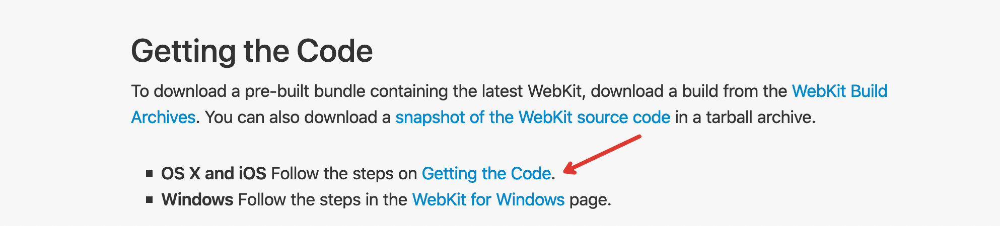
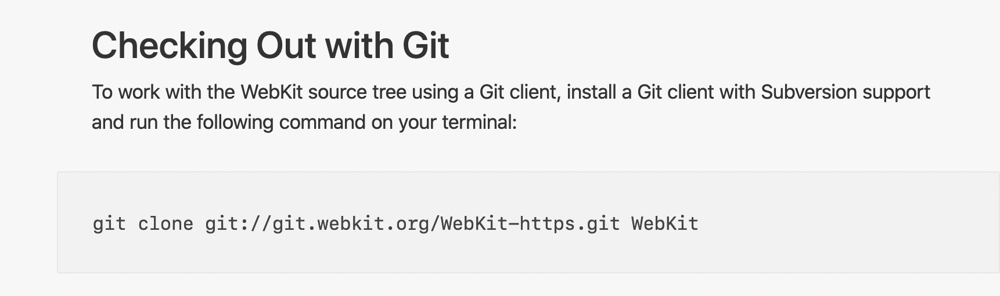
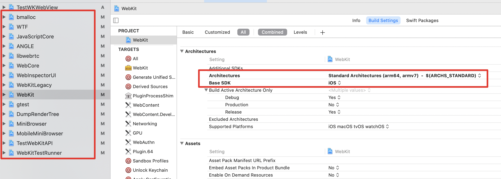
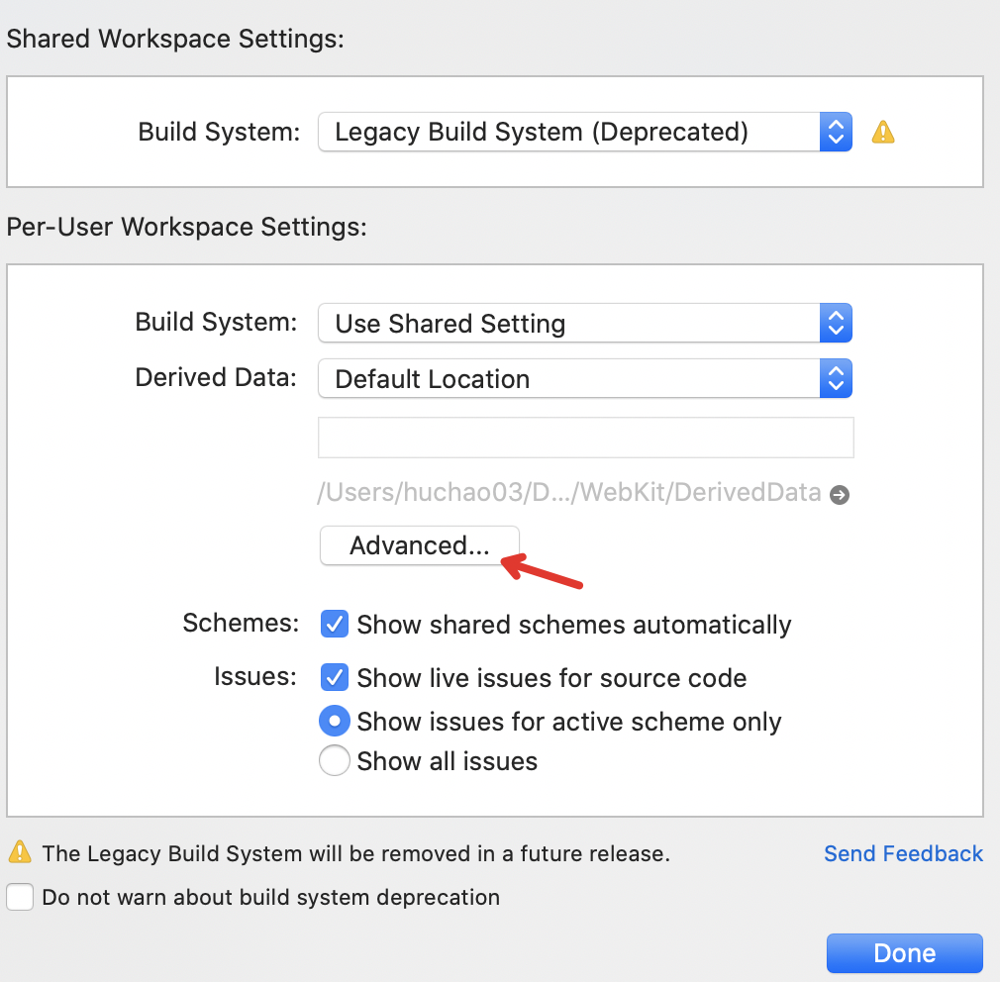
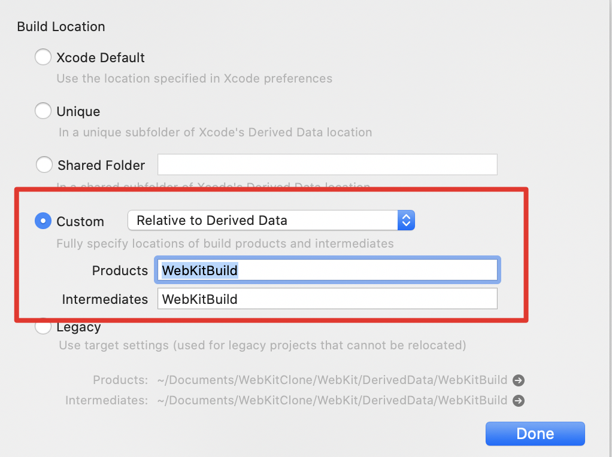
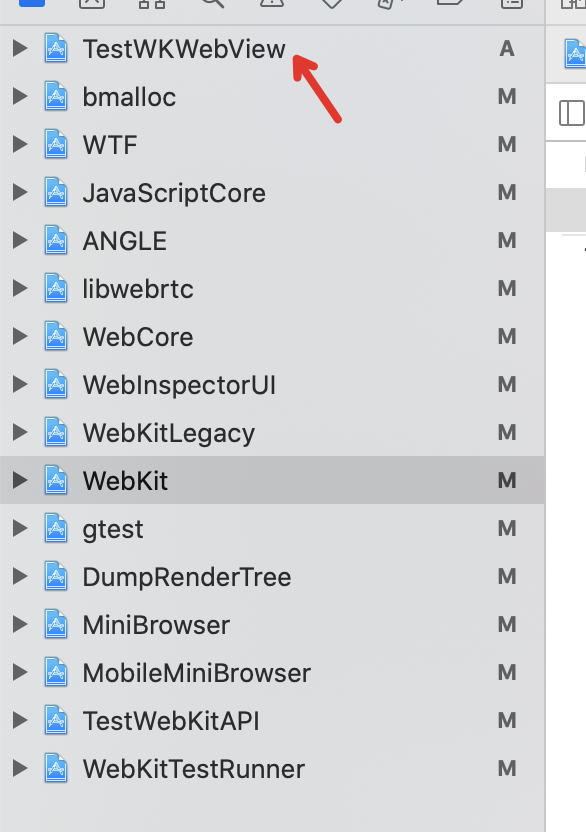
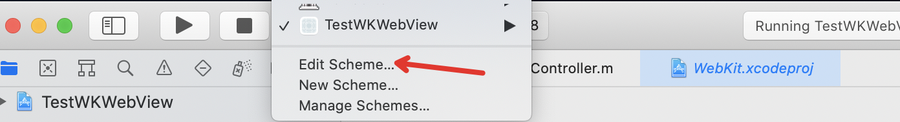
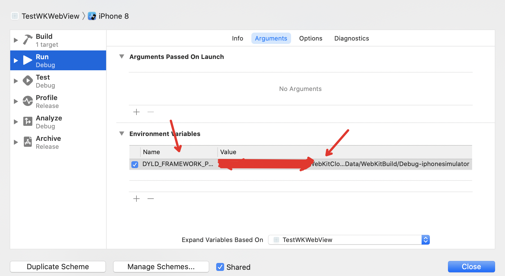
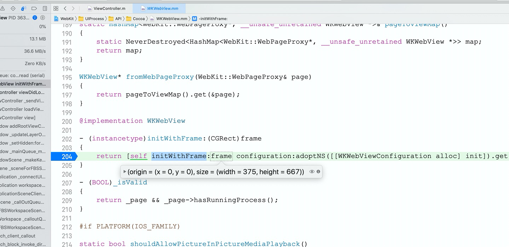

WebKit 编译
参考自：Xcode编译WebKit
1.下载WebKit源码
2)点击页面的 Get Started 进入新页面，如下图所示
3)点击 Getting the code 进入新页面，如下图所示

4)在源码下载页面，有多种下载方式，包括直接下载代码zip包，通过SVN下载，通过Git下载。这里选择使用Git的方式进行下载，在控制台运行下面的命令。下载量有点大，约6G左右，耐心等待即可，下载完成会生成一个WebKit目录。

我是从这个地址下载的：
git clone git://git.webkit.org/WebKit.git WebKit
2.Xcode编译
1)Embedded Builds
下载的WebKit目录里面有一个Tools/Scripts目录，这里面有各种脚本，包括使用命令行编译WebKit的脚本build-webkit，但是使用Xcode编译的时候用不着它。另一个重要的脚本就是configure-xcode-for-embedded-development，在控制台运行如下命令:
sudo Tools/Scripts/configure-xcode-for-embedded-development
之所以需要这个脚本，是因为iOS属于嵌入式平台，编译给iOS嵌入式平台的WebKit需要一些命令行工具，上面的脚本就是让Xcode能够构建这些命令行工具的。否则，在编译诸如JavaScriptCore的时候，就会报如下错误:‘com.apple.product-type.tool’, but there’s no such product type for the embedded platform。
需要注意的是，运行完上面脚本之后，最好重启一下Xcode。
2)更改Xcode配置
WebKit源码下载完成之后，用Xcode打开里面的WebKit.xcworkspace。默认情况下，WebKit.xcworkspace里面的各个工程都是macos配置，需要进行更改， 左边红框就是需要更改的工程，右边红框是更改后的配置。

3)设置构建产物存储位置
选择Xcode的File菜单->Workspace Settings...打开Workspace设置窗口:

选择Advanced...按钮，打开如下窗口，按红框所示进行配置:

4)编译
选中 All Source选项，选择一个模拟器，然后点击Xcode的构建按钮开始构建。剩下的就是耐心等待，等待激动人心的 Build Success 提示(可能编译完成后有一个关于MiniBrowser工程的弹窗，直接关闭即可，不影响编译)。
3.创建调试工程
编译好WebKit之后，我们的目的当然是进行调试，以便用来学习WebKit的源码。那么，如何才能让我们新建的工程里面，使用自己编译的WebKit.framework，而不是系统自带的呢？
1)用Xcode新建一个新的Project，示例里面是TestWKWebView，并将这个Project添加到WebKit.xcworkspace。

2)设置TestWKWebView的scheme
如下图所示，点击Edit Scheme，打开设置窗口

在Edit设置窗口选择 Arguments选项，在 Environment Variables里面添加一项，Name:DYLD_FRAMEWORK_PATH Value:Path_To_WebKit/DerivedData/WebKitBuild/Debug-iphonesimulator，这里的Path_To_WebKit就是WebKit目录所在路径。一个方便的方法是，在Xcode的WebKit工程打开Product目录，找到WebKit.framework然后Show in Finder，将包含WebKit.framework的目录复制下来即可。

做好上面的设置之后，就可以编写测试程序，然后打上断点,看是否能够成功断在WebKit的源码里面， 如果你能够成功进入断点，那么恭喜你，你已经能够调试WebKit源码了。
